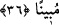

Sâlikler dostun çekmesi/cezbesi olmadan bir yere ulaşamazlar,
Yıllarca bu yolda koşuştursalar bile.
36. Allah ve Rasûlü bir işe hüküm verdiği zaman, inanmış bir erkek ve kadına o
işi kendi isteklerine göre seçme hakkı yoktur. Her kim Allah ve Rasûlü’ne karşı
gelirse, apaçık bir sapıklığa düşmüş olur.
Rivâyete göre Rasûlullah (s.a.) halası Ümeyme bint Abdulmuttalib’in kızı Zeyneb bint
Cahş’ı âzâdlısı olan Hârise b. Zeyd’e istedi. Zeyneb beyaz tenli ve güzeldi. Zeyd ise
siyah tenli yassı burunlu biriydi. Zeyneb bu teklifi reddetti ve: “Yâ Rasûlallah ben senin
halanın kızıyım ve Kureyş’in eşrafındanım. Kendim için ona râzı değilim.” dedi. Aynı
şekilde Zeyneb’in kardeşi Abdullah b. Cahş da bu teklifi reddetti. İşte bu âyet bunun
üzerine nâzil oldu.
“Allah ve Rasûlü” Zeyneb bint Cahş’ın nikahlanması gibi “bir işe hüküm verdiği
zaman,” yâni Rasûlullah (s.a.) hüküm verdiği zaman. Burada Allâh’ın zikredilmesi,
Rasûlullah (s.a.)’in durumunu yüceltmek, O’na (a.s.) itâat etmenin Allah Teâlâ’ya itâat
demek olduğu gibi, O’nun (a.s.) verdiği hükmün de Allâh’ın hükmü demek olduğunu
hissettirmek içindir. “İnanmış bir erkek ve kadına” Abdullah ve kız kardeşi Zeyneb de
buna dâhildir. “O işi kendi isteklerine göre” diledikleri gibi “seçme hakkı yoktur.”
Böyle bir şey yapmaları doğru ve düzgün olmaz. Bilakis görüş ve tercihlerini Hz.
Peygamber (s.a.)’in görüş ve tercihinden yana kullanmaları zorunludur.
Âyetteki iki zamîrin de çoğul yapılması mü’min ve mü’mine kelimelerinin nefiyden
sonra gelerek umumîlik ifâde etmesindendir. Bazıları ikinci zamîrin Rasûlullah (s.a.)’e
âid olduğunu ve tâzim için çoğul yapıldığını söylemişlerdir. Buna göre mânâ şöyle olur:
“İnanmış erkek ve kadına O’nun emri konusunda seçme hakkı yoktur.”
“Her kim Allah ve Rasûlü’ne” işlerden herhangi bir işte “karşı gelirse” ve kendi
görüşüyle amel ederse, Keşfü’l-esrâr’da geçtiği üzere Allâh’a karşı gelir ve Kitâb’a
muhâlif davranırsa, Rasûlü’ne karşı gelir ve sünnete muhâlif davranırsa “apaçık”
doğruluktan sapma olduğu besbelli olan “bir sapıklığa düşmüş olur.” Hakk’ın
yolundan sapmış ve dosdoğru yoldan ayrılmış olur.
et-Te’vîlâtü’n-Necmiyye’de der ki: “Kulun Allâh’ın onun için seçtiği dışında bir
tercihte bulunmasının uygun olmayacağına işâret etmektedir. Bilakis kulun tercihi
Allâh’ın tercihinden yana olmalıdır. Kul Allâh’ın ezeli hükümleri ortaya çıkınca onlara
îtiraz etmemelidir. Belki meydana gelmeden önce Allâh’ın takdir ettiği şeylerin şer
olanlarından Allâh’a sığınmalıdır. İş meydana geldiği zaman ya şerîata uygun olur veya